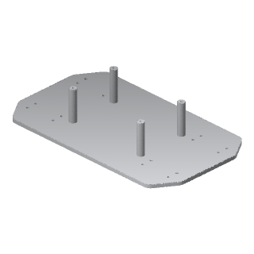
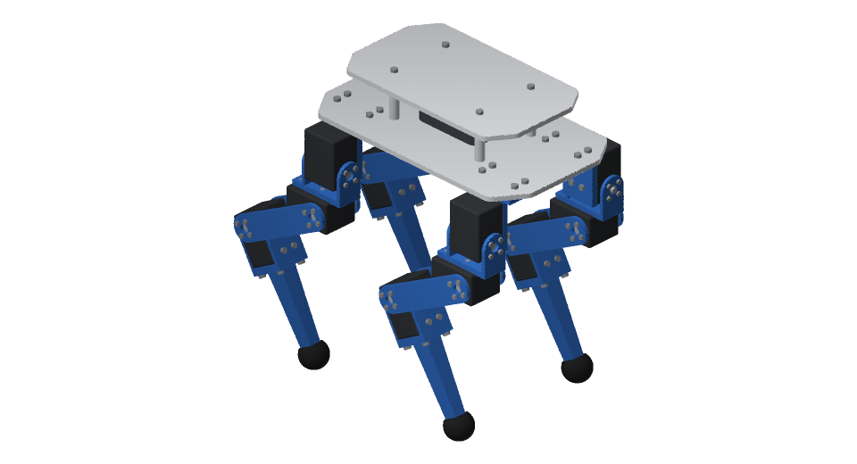
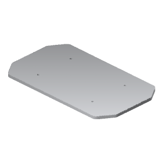
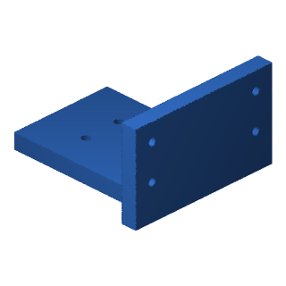
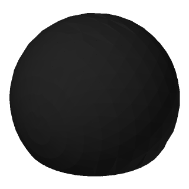
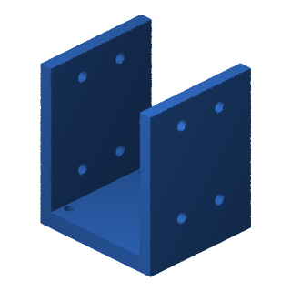
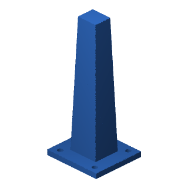

RobotDSL original / 4-legged robot
Dog
CC BY 4.0 · Open design

Drag to rotate. Use arrow keys to orbit, plus and minus to zoom, and Home to reset.
A walking robot built from printed body and leg components.
- Assembled mass
- 2.061 kg
- Printed pieces
- 30 / 14 designs
- Materials
- PLA / TPU
01 / Fabrication
Print files 14 parts · 30 pieces
Drag a part to rotate.
STL for slicing · STEP for editing









02 / Shopping list
Buy these parts
Quantities for one robot.
Servo support bearings
12 sets
ROBOTIS HN12-I101
Fits to the back of a servo so the leg joint is supported on both sides. 3 sets per leg × 4 legs.
View at ROBOTISScrews
Socket head cap screws
ISO 4762
| Size (mm) | Qty |
|---|---|
| M3 × 8 | 16 |
| M3 × 12 | 4 |
| M2.5 × 8 | 16 |
| M2 × 5 | 96 |
| M2.5 × 5 | 16 |
| M2.5 × 6 | 32 |
| M3 × 6 | 16 |
Electronics still to choose
These are also needed to run the robot. This guide does not yet provide a complete electronics shopping list.
- Computer
- Runs the software that controls the robot.
- Servo interface & power hub
- Connects the computer to the 12 joint motors and distributes power to them.
- Battery
- Supplies power. The design assumes a three-cell battery; capacity and model are unspecified.
- Cables & connectors
- Carry power and control signals between these components.
The robot's mass estimate includes 300 g for all these electronics together. This is an assumed weight. Component models and mounting details between the body plates are still unspecified.
03 / Build notes
Before you assemble
Set the joint zero
Legs straight down from the hips.
Keep the supplied servo horns fitted.Full design notesDimensions, fitting instructions
Design
The RobotDSL Dog is the RobotDSL Team's own design, drawn as CAD in code: a body and four legs, 2.061 kg in all. Every piece below prints without supports, as its file lies, on a printer's bed of 250 × 210 mm, 220 mm high. You can drive it in the Studio, under Walking robots.
Mounting & electronics
Between the body's plates is room for an allowance of 300 g for what a quadruped of twelve servos carries between its plates: a computer, the servos' interface and power hub, a three-cell battery and the wiring; the design names no product of them.
Joint alignment
Each servo's horn is fitted as it comes: set each joint's zero in its servo, the leg straight down from its hip.
Complete hardware list
- 12 × ROBOTIS Dynamixel XM430-W350
- 12 × ROBOTIS HN12-I101 idler sets
- 16 × M3 x 8
- 4 × M3 x 12
- 16 × M2.5 x 8
- 96 × M2 x 5
- 16 × M2.5 x 5
- 32 × M2.5 x 6
- 16 × M3 x 6
Licence & attribution
Designed by the RobotDSL Team
The files are published under CC BY 4.0, crediting the RobotDSL Team.
Open Studio